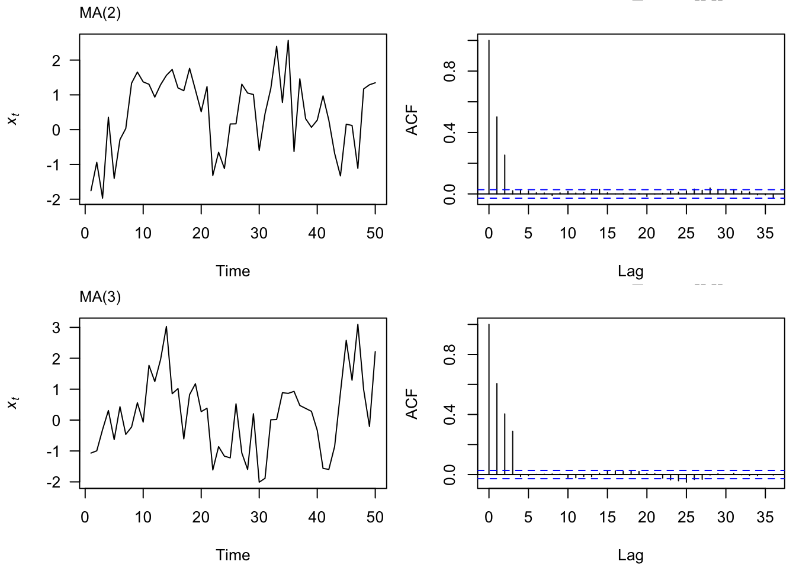
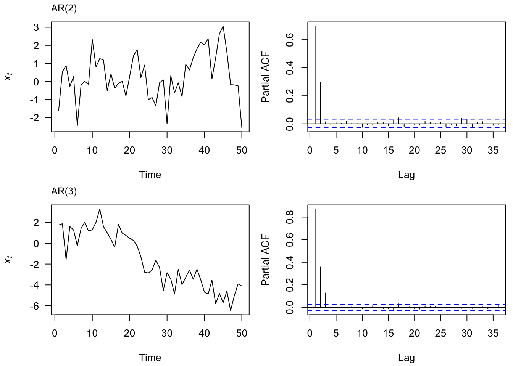

Set 2 Smoothing, Decomposition, Noise
2.1 Exponential Smoothing
An alternate way to smooth a time series, generally appropriate for a time series with no clear seasonality, is with exponential smoothing. Like the moving average, this method averages over recent observations but differs in that it assigns relatively more weight to observations that are relatively closer. This idea can be expressed as,
\[\begin{align} \hat{y}_{t+1 | t} = \alpha y_t + (1-\alpha) \hat{y}_{t | t-1}, \end{align}\]
where \(\hat{y}_{t+1 | t}\) can be interpreted as the smoothed value of \(y_{t+1}\) given data up to time \(t\). So, for the first few smoothed values, we have:
\[\begin{align} \hat{y}_{1|0} &= l_0 \\ \hat{y}_{2|1} &= \alpha y_1 + (1-\alpha) l_0 \\ \hat{y}_{3|2} &= \alpha y_2 + (1-\alpha) \hat{y}_{2|1} \\ &= \alpha y_2 + (1-\alpha) \alpha y_1 + (1-\alpha)^2 l_0 \end{align}\]
Since we don’t have data prior to \(y_1\), we denote \(\hat{y}_{1 | 0} = l_0\). Therefore, this model depends on two parameters, \((l_0, \alpha)\). If we continue with the sequence above, each predicted value \(\hat{y_t}\) can be expressed,
\[\begin{align} \hat{y}_{t+1 | t} = (1-\alpha) ^ t l_0 + \sum_{j=0}^{t-1} \alpha (1-\alpha) ^ j y_{t-j}. \\ \end{align}\]
Let’s take a look at how this method depends on the parameters.

In the plot above, of Albanian exports between 1991 and 2017, we display two smoothed time series (one for \(\alpha = 0.5\) and one where \(\alpha = 0.9\)). For any \(\alpha\) between 0 and 1, the weights attached to the observations decrease exponentially as we go back in time, hence the name “exponential smoothing”. If \(\alpha\) is small (i.e., close to 0), more weight is given to observations from the more distant past. If \(\alpha\) is large (i.e., close to 1), more weight is given to the more recent observations.
2.2 Decomposition
Time series data can exhibit a variety of patterns, and it is often helpful to split a time series into several components, each representing an underlying pattern category. In this section, we will aim to decompose a time series into three parts: a trend component (\(T\)), a seasonality component (\(S\)), and a random component (\(R\)). That is, for each observation \(Y_t\), we want to break it down into three parts:
\(Y_T = T_t + S_t + R_t\).
To illustrate, we will use a dataset on monthly retail employment in the US. Let’s first take a look at this data.
# us_employment data frame from the 'fpp3' package
us_employment$date = mdy ( str_c( month(us_employment$Month), "-1-", year(us_employment$Month)) )
retail = us_employment %>%
filter(Title == "Retail Trade", year(date) > 2002)
To decompose this time series, we will follow this basic algorithm:
- First we will use a moving average of order \(m=12\) to get the trend, \(T\).
- Then, we will estimate the seasonal effects, \(S\),by fitting a linear regression model to the de-trendended series (\(y-T\)) in which the month is the explanatory variable.
- The remainder is the random component, \(y-T-S\).

The trend captures the majority of the change that is observed in this time series, while the relative scale of the monthly seasonality and the random variation is small.
2.3 Statistical Models
Thus far, we have explored time series data to better understand their properties. These exploration methods can also be used to generate forecasts for future values. However, they are not able to quantify the uncertainty inherent in those forecasts, nor do they model the dependency structure inherent in the time series data. We will begin with a very simple model that does both of these things.
2.3.1 Random Walk
Let us consider a simple model to describe time series data,
\(y_t = y_{t-1}+e_t\),
where \(e_t \sim N(0, \sigma^2)\) and all elements of the error vector are mutually independent.
Let’s derive some important properties of this model:
- What is the mean, \(E(y_t)\)?
- What is the variance, \(Var(y_t)\)?
- What is the covariance between successive observations, \(\text{cov}(y_t, y_{t-1})\)?
- What is the correlation between successive observations, \(\text{cor}(y_t, y_{t-1})\)?
- Which properties depend on time?
2.3.2 White noise
Now let us define a new time series, \(z_t = y_t - y_{t-1}\).
Define the same properties as 1-5 above. These two simple models are important in finance. If a time series follows a random walk, then its first difference is white noise. Let’s see if this is the case with GOOG.
goog = getSymbols('GOOG', from='2020-12-22', to='2023-12-22',auto.assign = FALSE)
googdf = data.frame(ymd(index(goog)), goog$GOOG.Close)
names(googdf) = c("date", "price")
ggplot(googdf, aes(x = date, y = price)) +
geom_line() +
theme_minimal() +
ggtitle("GOOG Closing Price")
It seems plausible that this is a white noise series. How can we build further evidence of this. One way would be to examine the autocorrelation function. What are we looking for?

This is helpful but visual evidence alone is fairly weak. We could alternatively use a hypothesis test (Box-Pierce test) in which:
\[\begin{align} H_0 &: \rho_1 = \rho_2 = \ldots = \rho_k = 0 \\ H_A &: \text{at least one autocorrelation is different from 0} \end{align}\]
The test statistic (the Ljung-Box Q-Statistic) for this test:
\[\begin{align} Q = n(n+2) \sum_{i=1}^k \frac{\hat{\rho}_i^2}{(n-k)} \end{align}\]
follows a chi-squared distribution with \(k\) degrees of freedom under the null hypothesis.
2.4 Stationarity
Stationarity is a convenient assumption that allows us to describe the statistical properties of a time series. A time series is said to be stationary if there is:
- No systematic change in the mean or the variance
- No systematic trend
- No periodic variations or seasonality
2.5 Lab 2
Change the
esfunction we developed in Exponential Smoothing to return the SSE, rather thanyt, the smoothed time series. Now, use theoptimfunction to find the values of \((\alpha, l_0)\) that minimize SSE. Plot the exponentially smoothed time series using the optimized values for \((\alpha, l_0)\).Choose a different type of employee from the
us_employmentdataset and, first, plot the time series. Now, decompose the time series into trend, seasonal, and random components. Follow the algorithm in Decomposition. Plot these and comment on your observations.Simulate a Random Walk with 100 time points (\(y_t\), \(T= 1,\ldots,100\)). Repeat this process 50 times. Choose your own \(\sigma^2\) and use the same value for each of the 50 iterations. Plot all 50 time series on the same plot. On the title, report the \(\sigma^2\) value you used. Second, make a histogram of each of the end points (i.e., the 100th observation of each of the 50 time series). How does this histogram correspond with the theoretical properties of \(Y_{100}\) (i.e., the mean, variance, and shape of the distribution)?
Write a function that takes a time series vector as input and returns the Ljung-Box Q-Statistic for \(k=2\), along with the p-value for the hypothesis test in White Noise.
Using the
quantmodpackage, choose your favorite stock and see if the differenced version of its closing prices over the past year can be described as white noise. Include plots and the result of the Box test.